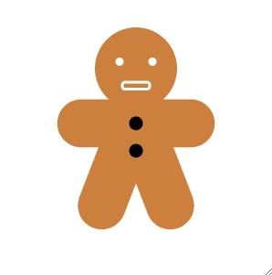
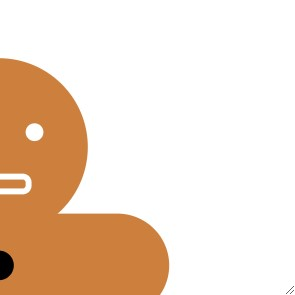
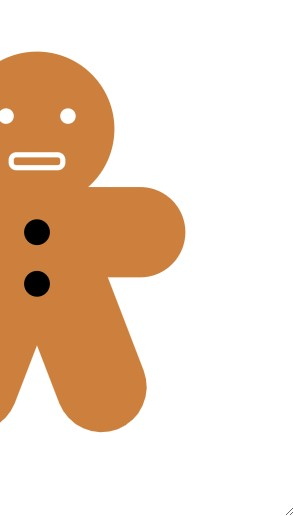
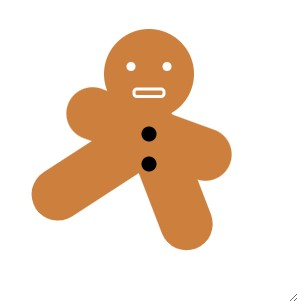
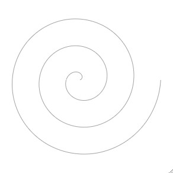
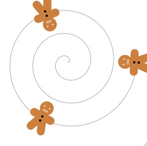
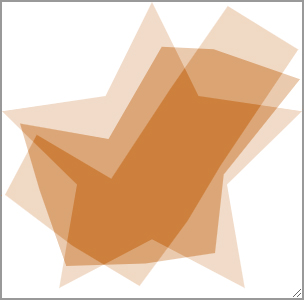

Positioning Elements
Your task: Position the SVG shapes to match the gingerbread target. Work in SVG coordinates rather than using CSS positioning.
Check your result: The eyes should be level, with the mouth below them and the limbs joined to the body.
Edit Lesson1/index.html · .exercise-positioning
Hint 1 — approach
Find the origin and trace how positive x and y move across the drawing.
Hint 2 — properties to explore
Use cx/cy for circles and x/y or x1/y1/x2/y2 for the other shapes.

Open image to inspect the full-size target (new tab).
ViewBox
Your task: Change the viewBox to frame the drawing like the target without changing its shape coordinates.
Check your result: The whole intended drawing should be visible with the same framing as the target.
Edit Lesson1/index.html · .exercise-viewbox
Hint 1 — approach
The viewBox describes the window into the SVG coordinate system.
Hint 2 — properties to explore
Its four numbers are min-x, min-y, width, and height; adjust the window rather than each shape.

Open image to inspect the full-size target (new tab).
PreserveAspectRatio
Your task: Resize the example and choose how the drawing fits its viewport. Match the target without distorting the figure.
Check your result: Check both a wide and a tall viewport; circles should remain circular.
Edit Lesson1/index.html · .exercise-aspect-ratio
Hint 1 — approach
Compare stretching with fitting and cropping.
Hint 2 — properties to explore
Experiment with preserveAspectRatio values using xMidYMid with meet or slice.

Open image to inspect the full-size target (new tab).
SVG Transform
Your task: Rotate the marked leg around its top joint to match the target.
Check your result: The leg should turn while its top joint stays in place.
Edit Lesson1/styles/training_styles.css · .exercise-svg-transform
Hint 1 — approach
A transform needs a suitable reference box and pivot.
Hint 2 — properties to explore
Explore transform-box: fill-box and transform-origin before adjusting rotate().

Open image to inspect the full-size target (new tab).
Animate Path
Your task: Animate the spiral so its stroke appears to draw and erase repeatedly.
Check your result: The full path should participate in a smooth repeating animation.
Edit Lesson1/styles/training_styles.css · .exercise-animate-path
Hint 1 — approach
A dashed stroke can behave like one long dash covering the whole path.
Hint 2 — properties to explore
Use the path length for stroke-dasharray and animate stroke-dashoffset with keyframes.

Open image to inspect the full-size target (new tab).
Motion Along Path
Your task: Move the three figures along the spiral with staggered timing.
Check your result: Each figure should follow the curve and start at a different time.
Edit Lesson1/styles/training_styles.css · .exercise-motion-path
Hint 1 — approach
Movement can follow a path instead of separate x/y translations.
Hint 2 — properties to explore
Combine offset-path, animated offset-distance, and individual animation-delay values.

Open image to inspect the full-size target (new tab).
SVG Morph
Your task: Morph one polygon between the star and checkmark when the pointer enters and leaves it. Edit the SVG markup for this task.
Check your result: The transition should work in both directions without leaving two overlapping shapes.
Edit Lesson1/index.html · .exercise-svg-morph
Hint 1 — approach
Both polygon states need matching numbers of point coordinates.
Hint 2 — properties to explore
Use SVG animate elements for the points attribute, triggered by mouseenter and mouseleave.

Open image to inspect the full-size target (new tab).